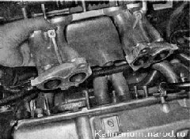

Прокладка впускного трубопровода и выпускного коллектора двигателя 1,6 л - замена
Для выполнения работы потребуется смотровая канава или эстакада.
Снятие
1. Подготавливаем автомобиль к выполнению работы.
2. Ключом на 13 мм отворачиваем две гайки 1 крепления прижимной планки кронштейна крепления каталитического коллектора. Тем же ключом отворачиваем два болта 2 крепления кронштейна к блоку цилиндров.
3. Ключом на 13 мм отворачиваем болт нижнего крепления правой штанги к блоку цилиндров.
4. Торцовым ключом на 17 мм отворачиваем гайку нижнего крепления левой штанги.

5. Отсоединяем каталитический коллектор от приемной трубы дополнительного глушителя.
6. Снимаем ресивер.
7. Снимаем топливную рампу.
8. Торцовым ключом на 13 мм отворачиваем две гайки крепления монтажной проушины (рыма) и снимаем ее.
9. Торцовым ьслючом на 13 мм ослабляем затяжку гайки 1 нижнего крепления кронштейна, и отворачиваем гайку 2 верхнего крепления кронштейна.
10. Отводим кронштейн в сторону (поворачивая его на шпильке как на оси).
11. Торцовым ключом на 13 мм с удлинителем отворачиваем пять гаек 1 верхнего крепления и две гайки 2 нижнего крепления впускного трубопровода. Накидным ключом той же размерности отворачиваем гайку 3 крепления правой штанги к впускному трубопроводу. Ключом на 17 мм отворачиваем гайку 4 крепления левой штанги.
12. Снимаем левую штангу.
13. Снимаем правую штангу и дистанционную втулку со шпильки впускного трубопровода.
14. Снимаем впускной трубопровод.
15. Отсоединяем колодку жгута проводов отдатчика концентрации кислорода
16. Ключом на 13 мм отворачиваем две гайки левого и правого крепления каталитического коллектора и снимаем коллектор.
17. Снимаем со шпилек прокладку.
Установка
Устанавливаем выпускной коллектор и впускной трубопровод в обратной последовательности, заменив прокладку новой.